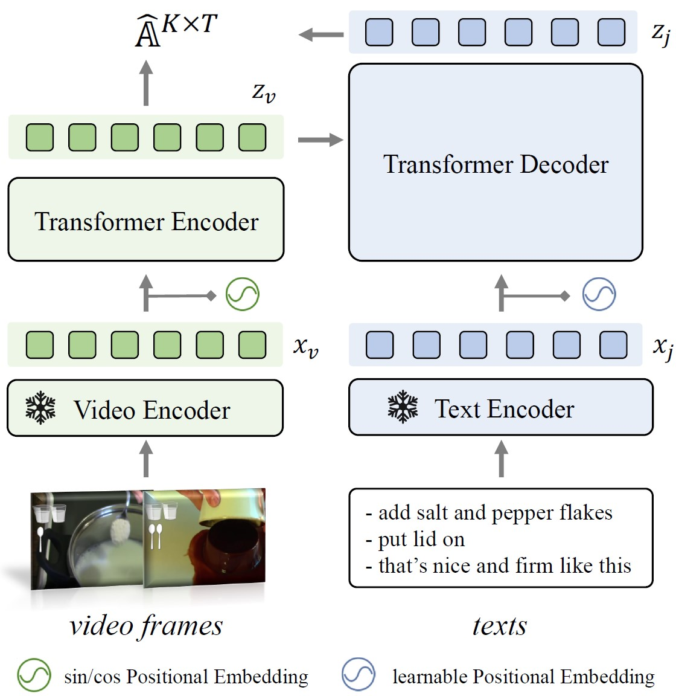
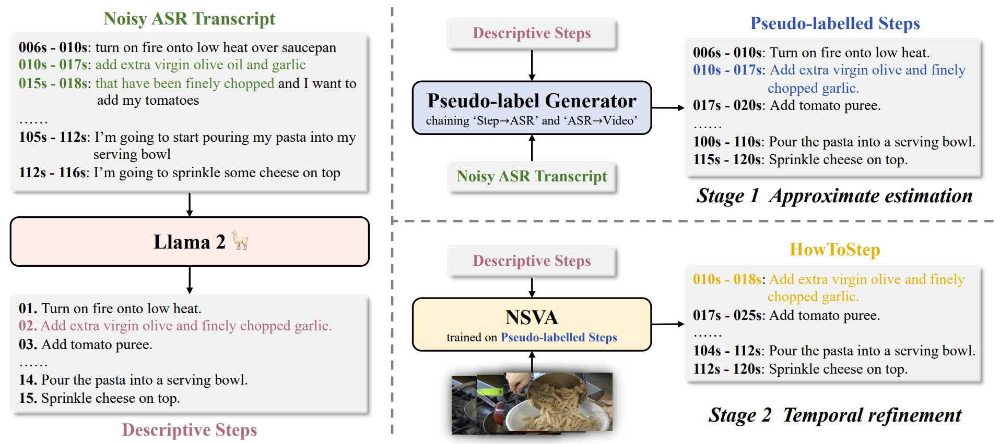
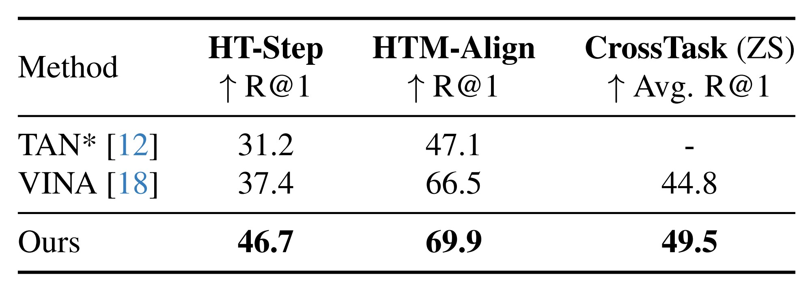

A Strong Baseline for Temporal Video-Text Alignment
|
1Coop. Medianet Innovation Center, Shanghai Jiao Tong
University
|
|
2Visual Geometry Group, University of Oxford
|
Abstract
In this paper, we consider the problem of temporally aligning the video and texts from instructional videos, specifically, given a long-term video, and associated text sentences, our goal is to determine their corresponding timestamps in the video.
To this end, we establish a simple, yet strong model that adopts a Transformer-based architecture with all texts as queries, iteratively attending to the visual features, to infer the optimal timestamp. We conduct thorough experiments to investigate:
(i) the effect of upgrading ASR systems to reduce errors from speech recognition,
(ii) the effect of various visual-textual backbones, ranging from CLIP to S3D, to the more recent InternVideo,
(iii) the effect of transforming noisy ASR transcripts into descriptive steps by prompting a large language model (LLM), to summarize the core activities within the ASR transcript as a new training dataset.
As a result, our proposed simple model demonstrates superior performance on both narration alignment and procedural step grounding tasks, surpassing existing state-of-the-art methods by a significant margin on three public benchmarks, namely, 9.3% on HT-Step, 3.4% on HTM-Align and 4.7% on CrossTask.
We believe the proposed model and dataset with descriptive steps can be treated as a strong baseline for future research in temporal video-text alignment. All codes, models, and the resulting dataset will be publicly released to the research community.
Architecture

Schematic visualization of the proposed Transformer-based video-text alignment network termed NSVA.
The visual features are treated as key-value pairs while textual features are treated as queries, to predict the alignment score matrix between video frames and texts.
ASR Transcripts → Aligned Descriptive Steps
As presented in the following figure,
the entire procedure of ASR transcripts transformation can be divided into three parts:
(i) we leverage LLM to summarize narrations from the ASR transcript into descriptive steps; (ii) we use the similarity between the original transcript and generated steps to roughly determine the start/end timestamp for each step as pseudo-label;
(iii) we train the NSVA model on the generated steps with pseudo-label, and then use the trained model to refine the time range for each generated step (i.e., self-training).
We name the final dataset as HowToStep.

Results
We compare our best model with existing state-of-the-art approaches, to present a strong, yet simple baseline on video-text alignment for future research.
As shown in the table, on the challenging HT-Step task,
that aims to ground unordered procedural steps in videos,
our model achieves 46.7% R@1, leading to an absolute improvement of 9.3%, over the existing state-of-the-art (37.4%) achieved by VINA;
On HTM-Align, which aligns narrations in the video,
our method exceeds sota model by 3.4%;
On CrossTask, where we need to align video frames and task-specific steps without finetuning, our method outperforms existing state-of-the-art approach by 4.7%,
demonstrating our model learns stronger joint video-text representation.

Acknowledgements
Based on a template by Phillip Isola and Richard Zhang.